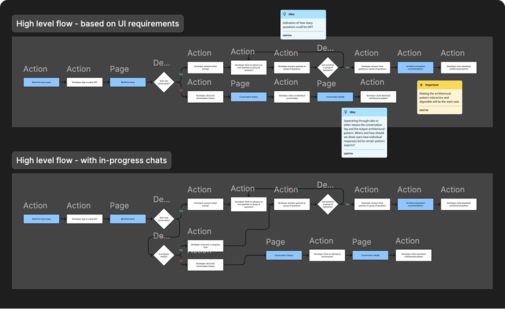
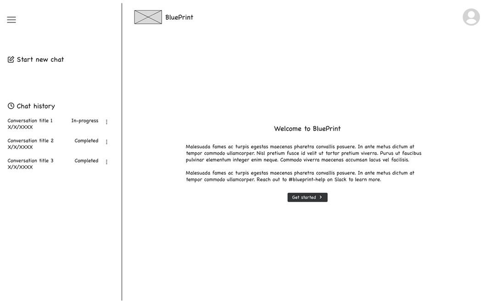
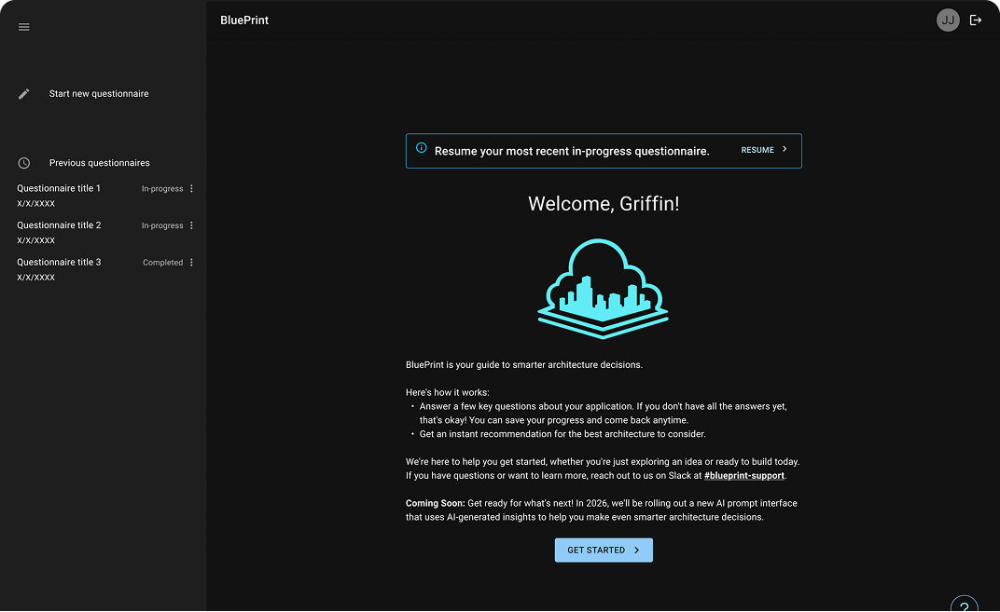

Overview
The enterprise application design process is rife with siloed knowledge, suboptimal decisions, and expensive rework. BluePrint makes designing applications easier and faster by recommending standardized patterns to meet developers' requirements.
I led design for the platform's minimum viable product, launched in Q4 2025.
Jump to final design ↓Problem
Developers lack an easy way to discover and reuse standardized architectural patterns.
Through empathy interviews with developers and application architects, my team identified significant challenges in the enterprise application design process.
Developers often lack expertise in evolving technology trends and established architectural guidelines, and architects with this expertise are often consulted late in the process — after developers have already made redundant or suboptimal decisions. Scarce documentation means developers implement patterns inconsistently and with arbitrary uniqueness. While a catalog of approved, standardized patterns for architecture exists, it isn't well known, and adoption isn't enforced.
The result: tech debt, expensive rework, and delayed project timelines.
Design process
Mapping the happy path and sketching early exposed missing requirements before high fidelity.
Building upon requirements set forth by my product team, I ideated on the design of a platform that takes application intent and requirements and provides suggested architectural patterns. I evolved the concept from a user flow diagram to a high-fidelity prototype. Click any card below for a closer look.

By mapping the happy path, I identified missing functional requirements.
View details
Sketching the UI fleshed out uncertainties in the platform's core capabilities.
View details
After stakeholder feedback, I created a high-fidelity prototype to test with users.
View detailsUser research
I tested the high-fidelity prototype with six target users before the MVP launched.
To evaluate the proposed UI design and information architecture, I conducted moderated usability testing with associates who were familiar with app architecture or had expressed interest in BluePrint:
- 1 cloud policy engineer
- 3 software engineers
- 2 architects (1 solutions, 1 application)
Using the insights I uncovered, my tech team was able to implement necessary improvements prior to MVP launch.
Research goals
- Are users able to complete a questionnaire and receive a recommendation?
- Are users able to begin a questionnaire?
- Where and how do users struggle in the flow?
- How do users feel about the recommendation?
- Are users able to navigate to previous recommendations?
Insights
The structure held up; the content needed refinement.
What worked
For the most part, participants appreciated BluePrint's intuitive design and recognized its potential for usefulness in their day-to-day work with application architecture.
Participants knew how to start a questionnaire and where to find past questionnaires without prompting.
Users expected dynamic, guided questions about their application and what they were trying to achieve — and that's exactly what they got.
The contents of the recommendations — pros and cons, a component diagram, multiple patterns to compare — aligned with participant expectations.
What to fix before launch
Of the few improvements needed for the MVP design, none were structural — all were about what the product said, not how it was shaped.
What to build next
Multiple opportunities to enhance BluePrint's functionality were identified during testing. Most participants were confused by the JSON output format — what it represented and what they could do with it. They wanted something they could use "right away" and play around with.
Other desired capabilities initially contradicted requirements set forth for the MVP by my product partner — editing, deleting, and sharing questionnaires. The team believed these functionalities could allow users to "game" the recommendation engine. However, since BluePrint is a tool and not law, I was able to advocate for these features, and the insights I surfaced helped influence the product roadmap and shift the engineering team's focus.
- An output format that's easier to share and deploy than JSON
- Edit and delete functionality for questionnaire responses
- Shareable links to BluePrint questionnaires and recommendations
Final design
The MVP questionnaire evolved into a conversational AI that recommends a pattern in seconds.
The MVP
AI integration
After the MVP, the next major milestone was AI integration. I designed the conversational experience that shipped: instead of a fixed questionnaire, developers describe their application in their own words and BluePrint asks follow-up questions before recommending a pattern.

BluePrint asks clarifying follow-up questions, adapting based on each previous answer.
Results
BluePrint became part of how every Capital One developer starts a build.
BluePrint's MVP was well-received by users — they recognized the platform's potential to streamline the architectural design process — and the research I conducted gave the team a clear, prioritized enhancement roadmap.
That AI experience was then integrated into Build Readiness, the platform developers across Capital One use to prepare an application for build. Developers now use BluePrint to gather intent about their application and prefill the Build Readiness form, cutting it from 110 questions to 56.
Takeaways
Evidence, not an individual's preference, is what shifts a product team's roadmap.
The biggest lesson was how to advocate when what users need conflicts with a product team's initial direction. Editing, deleting, and sharing questionnaires were deliberately left out of the MVP because the team worried users would game the recommendation engine. Participants wanted them anyway. Instead of arguing preference, I brought the testing evidence and reframed the risk: BluePrint is a guide, not a gate, so letting people revise their answers makes the recommendations more useful, not less trustworthy. That shifted the roadmap.
In hindsight, I'd bring my product partner into synthesis from the start. Seeing the evidence firsthand would have given them richer context earlier and made that advocacy far less of an uphill conversation.